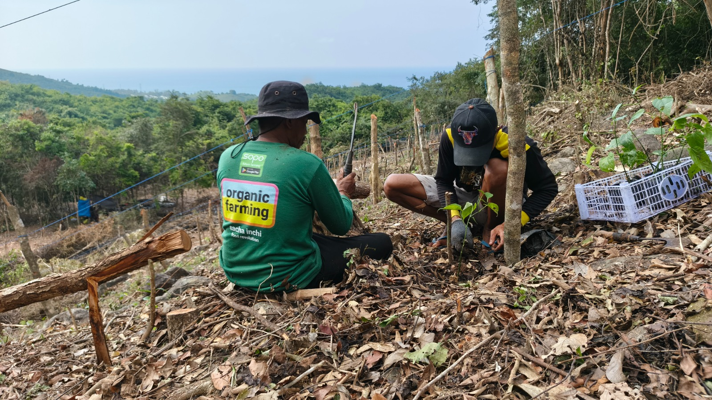

Rich in Omega 3, 6, and 9
Sacha Inchi oil is positioned as a functional nutrition ingredient with strong value perception in health-conscious markets.
Access certified land, compliant legal structuring, and professionally managed plantation operations within one integrated agribusiness offering from East Lombok.
Project overview footage from the East Lombok plantation area.
Aerial Plantation Overview
Commodity Focus
Sacha Inchi
Investment Model
Asset + Managed Yield
Commodity
High-value oilseed commodity
Climate
Dry tropical zone
Structure
Clear domestic and PT PMA pathways
Sacha Inchi combines premium product positioning, growing downstream applications, and a cultivation profile that fits the East Lombok operating environment.

Image Placeholder
Sacha Inchi pods, seeds, and cold-pressed oil presentation.
Sacha Inchi oil is positioned as a functional nutrition ingredient with strong value perception in health-conscious markets.
The crop serves superfood, nutraceutical, and herbal cosmetics sectors that continue to seek traceable premium supply.
Dry tropical conditions, sunlight intensity, and available agricultural land create a favorable operating environment.
Value can expand beyond cultivation through oil extraction, branded wellness products, and contract processing channels.
Each route is designed to keep asset security, operational simplicity, and regulatory compliance aligned with the profile of the investor.
Designed for Indonesian investors who want direct land ownership paired with professionally managed plantation participation.
Built for international investors who require a compliant structure for agricultural asset control and legal participation in Indonesia.
Adjust the land size to review an indicative annual scenario for a managed Sacha Inchi plantation package.
Range: 1,000 m2 to 10,000 m2
Estimated Annual Harvest Yield
1.20 tons
Estimated Gross Revenue
IDR 77,700,000
Estimated ROI
8.88%
Risk & Mitigation
01
Mitigated through managed operations, field supervision, standardized cultivation protocols, and phased plantation monitoring from establishment to harvest.
02
Addressed by building buyer channels, offtaker discussions, and a commodity strategy that targets higher-value downstream positioning instead of raw volume alone.
03
Legal | Operations | Market
Reduced through certificate checks, document preparation for due diligence, and alignment of the investment route with the investor profile, whether domestic or PT PMA.
Next Step
This helps move from indicative numbers into document-backed review, including land status, operating scope, and the pathway that matches your investor profile.
Investment Snapshot
Land Allocation
0.50 ha
Shows the productive plantation area being modeled in this scenario.
Oil Output Potential
420 liters
An indicative view of annual oil-equivalent output based on the selected land size.
Projection Table
Indicative View| Selected Land Size | 5,000 m2 |
|---|---|
| Equivalent Area | 0.50 ha |
| Annual Seed Yield | 1.20 tons |
| Annual Oil Estimate | 420 liters |
| Indicative Package Benchmark | IDR 875,000,000 |
| Estimated Gross Revenue | IDR 77,700,000 |
| Estimated ROI | 8.88% |
How to read this
Helps investors frame the economic profile of a managed plantation before reviewing the full prospectus.
Supports quick comparison across package sizes for both domestic and foreign investment routes.
Treat this calculator as an entry-level estimate only. Final outcomes depend on planting stage, market conditions, and legal structuring.
Return Signal
BalancedA quick visual reference for comparing package size against indicative annual return potential.
Illustrative Assumptions
Illustrative figures only. This calculator excludes tax, land appreciation, financing effects, and timing differences between establishment and mature harvest cycles.
A credible agribusiness offering should begin with legal clarity, asset security, and operating capability.
Land parcels are prepared for due diligence with verifiable certificates and no unresolved disputes.
Foreign investment structures are aligned with prevailing rules to protect corporate asset positioning.
Experienced plantation managers handle nursery, cultivation, harvest, and supply chain coordination.
Harvest output is supported by prepared buyer relationships to improve visibility on market absorption.
Explore articles on commodity value, East Lombok location advantages, legal structuring, land rights, and managed plantation operations before requesting the full prospectus.
If you are exploring how to invest in Lombok or searching for investasi di Lombok with a more asset-backed approach, start with our bridge guides before moving into productive land and managed agriculture analysis.
Understand Sacha Inchi, its product potential, and why this commodity attracts premium-market attention.
Learn why East Lombok offers a suitable operating environment for climate-fit, export-oriented cultivation.
Review how PT PMA supports compliant foreign participation and asset control in Indonesia.
Start here if your search begins broadly with Lombok investment and you want a clearer path toward productive land and managed agriculture.
Mulai dari sini jika pencarian Anda masih umum, lalu arahkan evaluasi ke aset produktif, lahan, dan model agribisnis terkelola.
Compare SHM, HGB, and related land rights to understand how legal structure affects investor security.
See how land ownership, plantation management, and harvest monetization work in a managed investment model.
These answers provide a concise starting point before you request the full prospectus and legal walkthrough.
Yes. The structure is designed to support lawful foreign participation through a PT PMA route with HGB-based land control under the company.
Yes. The operating team oversees planting, farm maintenance, harvest coordination, and buyer linkage on behalf of investors.
Investors typically review the prospectus, legal structure overview, land documentation summary, and indicative financial scenario before proceeding.